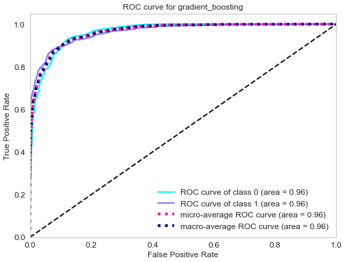
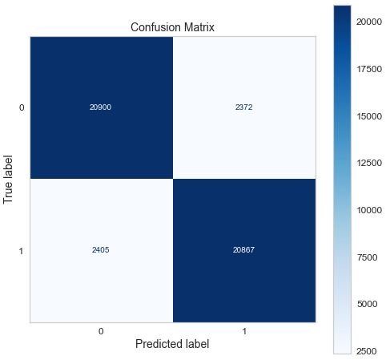

Business problem
Every hard credit inquiry lowers the applicant's credit score, even when the bank refuses the card. This model estimates the probability of approval first, so the applicant can decide whether to apply without the loss of score.
Dataset: Kaggle, credit card approval prediction. Stack: Python, scikit-learn, Streamlit for the interface.
Does the model separate approvals from refusals?
A classifier is only useful if it performs better than a random guess. The ROC curve is the first check. It shows the true positive rate against the false positive rate as the decision threshold moves.

Model check
from sklearn.metrics import roc_auc_score, roc_curve
fpr, tpr, thresholds = roc_curve(y_test, y_pred_proba)
roc_auc_score(y_test, y_pred_proba)The curve stays well above the diagonal, so the model separates the two classes. The product decision is where to set the threshold on this curve. A stricter threshold reduces false approvals and also refuses good applicants. That balance is a business decision, not a modeling decision.
Which errors does the model make?
Total accuracy hides the type of error. In a credit decision, a false approval and a false refusal have very different costs. The confusion matrix is therefore more useful than the accuracy score.

Model check
from sklearn.metrics import confusion_matrix
confusion_matrix(y_test, y_pred)Before this model controls an approval flow, the business must compare false approvals against the cost of a bad line of credit, and false refusals against the cost of a lost customer. The two error types support different thresholds. The risk and product teams set them together.
Bottom line
The model separates approvals from refusals well enough to give an applicant a useful estimate before a hard inquiry. That is the value: the applicant keeps the credit score when the answer is likely to be no.
The model is not ready to control an approval decision. The confusion matrix shows the two error types, and each carries a different cost. A bank must price a false approval against a bad line of credit, and a false refusal against a lost customer, and then set the threshold. Until risk and product agree on those costs, this stays an advisory tool for the applicant.